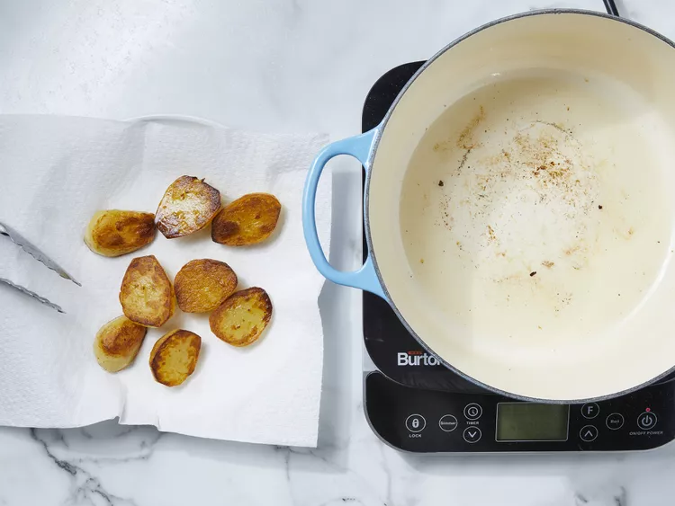

HTML Recipes
Chicken Biryani
Recipe
INGREDIENTS
- 4 tablespoons vegetable oil, divided
- 4 small potatoes, peeled and halved
- 2 large onions, finely chopped
- 2 cloves garlic, minced
- tablespoon minced fresh ginger root
- 2 medium tomatoes, peeled and chopped
- 1 teaspoon salt
- 1 teaspoon ground cumin
- 1/2 teaspoon chili powder
- 1/2 teaspoon ground black pepper
- 1/2 teaspoon ground turmeric
- 2 tablespoons plain yogurt
- 2 tablespoons chopped fresh mint leaves
- 1/2 teaspoon ground cardamom
- 1 (2 inch) piece cinnamon stick
- 3 pounds boneless, skinless chicken pieces cut into chunks
Rice
- 1 pound basmati rice
- 2 1/2 tablespoons vegetable oil
- 1 large onion, diced
- 5 pods cardamom
- 3 whole cloves
- 1 (1 inch) piece cinnamon stick
- 1/2 teaspoon ground ginger
- 1 pinch powdered saffron
- 4 cups chicken stock
- 1 1/2 teaspoons salt
Steps to make it happen
Step 1Gather all ingredients.

Step 2Heat 2 tablespoons of oil in a large skillet. Fry potatoes in hot oil until lightly browned, about 3 to 5 minutes. Remove to a paper towel-lined plate to drain; set aside.

Step 3Add remaining 2 tablespoons of oil to the skillet. Add onions, garlic, and fresh ginger; cook and stir until onion is soft and golden. Add tomatoes, salt, cumin, chili powder, pepper, and turmeric; cook, stirring constantly, for 5 minutes.